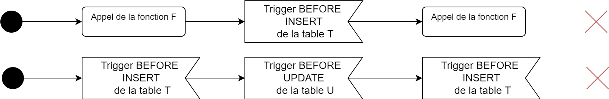

Fonctions et déclancheurs
Fonctions
Qu'est-ce qu'une fonction ?
- Traitement regroupé dans une structure. Peut accepter des valeurs et les transformer pour retourner un résultat.
Particularité en SQL :
- Le type de retour VOID n'existe pas. Toutes les fonctions retournent un résultat.
Types de fonction
Plusieurs types de caractéristiques de fonctions existent dans MySQL. On en distingue principalement 2 :
- Caractère déterministe
- Contenu de la fonction (Type de requête qu'elle contient)
Caractère déterministe
Indique si la valeur de retour est déterminée seulement selon les paramètres ou non.
2 valeurs possibles :
- DETERMINISTIC
- NOT DETERMINISTIC (NOW, RAND...)
Contenu
4 valeurs représentent le contenu d’une fonction :
NO SQL : ne contient pas d’instruction SQL CONTAINS SQL : contient des instructions SQL READS SQL DATA : contient une opération SELECT MODIFIES SQL DATA : contient une opération INSERT, UPDATE ou DELETE
On indique toujours une seule caractéristique de contenu. (MODIFIES implique READS).
Exigence minimale
Dans vos fonctions, vous devez préciser explicitement au moins une caractéristique de déterministe ou de contenu.
Pour le cours, il faut préciser les deux caractéristiques en tout temps
Par défaut : Déterminisme : NOT DETERMINISTIC Valeur : CONTAINS SQL
Vous pouvez en préciser une de chaque type.
Cas des fonctions non déterministe
ERREUR 1418 : This function has none of DETERMINISTIC, NO SQL, or READS SQL DATA in its declaration and binary logging is enabled (you might want to use the less safe log_bin_trust_function_creators variable).
Pour éviter cette erreur, on peut exécuter la ligne suivante AVANT de créer la fonction :
SET GLOBAL log_bin_trust_function_creators = 1;
Référence : https://stackoverflow.com/questions/26015160/deterministic-no-sql-or-reads-sql-data-in-its-declaration-and-binary-logging-i
Déclarer une fonction
DELIMITER $$
CREATE FUNCTION nom_fonction() RETURNS TYPE CARACTERISTIQUE_1 CARACTERISTIQUE_2
BEGIN
...
RETURN VALEUR;
END $$
DELIMITER ;
Exemple de fonction
Fonction qui retourne le nombre d’enregistrements de la table Étudiant.
DELIMITER $$
CREATE FUNCTION nombre_etudiants() RETURNS INTEGER NOT DETERMINISTIC READS SQL DATA
BEGIN
DECLARE _nombre INT;
SET _nombre = (SELECT count(*) FROM Etudiant);
RETURN _nombre;
END $$
DELIMITER ;
Pour exécuter la fonction
SELECT nombre_etudiants();
Ajouter des paramètres
On précise les paramètres entre les parenthèses en utilisant la syntaxe
nom_parametre TYPE
Exemple de fonction
La fonction ajoute 1 à son argument.
DELIMITER $$
CREATE FUNCTION plus_un(_nombre INTEGER) RETURNS INTEGER DETERMINISTIC CONTAINS SQL
BEGIN
RETURN _nombre + 1;
END $$
DELIMITER ;
Supprimer une fonction
L’instruction pour retirer une fonction est :
DROP FUNCTION nom_fonction;
Documenter une fonction
Pour documenter une fonction, on utilise un commentaire de style JavaDOC
/**
* Description de la fonction
*
* @param _nom_parametre Description
* @param _nom_parametre Description
* @return Description de la valeur retournée
*/
--- Exercice 5.2.1 ---
A. Faites une fonction qui retourne la somme de deux entiers.
B. Faites une fonction qui calcule la factorielle d’un entier.
Rappel :
6! = 6 x 5 x 4 x 3 x 2 x 1 x 1
0! = 1
C. Retournez le nombre d’étudiants inscrit dans un groupe dont vous connaissez la session (semestre et annee), le cours (sigle) et le numéro du groupe.
Effectuez cet exerice de deux façons : sans utiliser de jointure et en utilisant des jointures.
Paramètres : semestre, annee, sigle, numero_groupe
Exemples d'exécution:
| Semestre | Annee | Sigle | Numéro de groupe | Nombre d'étudiants |
|---|---|---|---|---|
| Automne | 2020 | 420-1D6-VI | 1 | 3 |
| Automne | 2021 | 420-1D6-VI | 1 | 2 |
Déclencheurs
Comment résoudre les situations suivantes :
- Si l’on essaie d’ajouter une note plus grande que la note maximale d’évaluation, alors on affecte la note maximale
- Après la création d'une Evaluation, on crée un ligne de EvaluationEtudiant pour chaque étudiant du groupe
- Si l'on supprime une EvaluationEtudiant, alors on supprime le document associé (sens inverse du ON CASCADE)
Un déclencheur (appelé communément Trigger) permet d’effectuer un traitement immédiatement avant ou après l'une de ces opérations :
- INSERT
- UPDATE
- DELETE
Syntaxe des déclencheurs
DELIMITER $$
CREATE TRIGGER nom TEMPS EVENEMENT ON Table FOR EACH ROW
BEGIN
traitement
END; $$
DELIMITER ;
TEMPS : BEFORE ou AFTER
EVENEMENT : INSERT, UPDATE ou DELETE
Choisir BEFORE ou AFTER
BEFORE : Quand il faut changer une valeur à insérer ou à modifier.
AFTER : Quand on veut s’assurer que la donnée soit bien insérée avant de faire le traitement (ex. n’a pas déclenché un check erroné).
Accéder à l'enregistrement modifié
On peut utiliser les références OLD et NEW pour accéder à l'enregistrement qui fait l'objet d'un déclencheur.
| Type de requête | OLD | NEW |
|---|---|---|
| INSERT | NULL | L'enregistrement inséré |
| UPDATE | L'enregistrement avant la modification | L'enregistrement après la modification |
| DELETE | L'enregistrement supprimé | NULL |
Exemple
Si l’on essaie d’ajouter une note plus grande que la note maximale d’évaluation, alors on affecte la note maximale
DELIMITER $$
CREATE TRIGGER respect_note_maximale BEFORE INSERT ON Evaluation_etudiant FOR EACH ROW
BEGIN
DECLARE _note_maximale INTEGER;
SET _note_maximale = (
SELECT ponderation FROM Evaluation
WHERE id_evaluation = NEW.id_evaluation
);
IF NEW.note > _note_maximale THEN
SET NEW.note = _note_maximale;
END IF;
END $$
DELIMITER ;
Documenter un déclencheur
Pour documenter un déclencheur, on utilise un commentaire de style JavaDOC
/**
* Description du TRIGGER
*
* @dependencies Table_dependante, table_dependante...
*/
Démonstration
Si la date de passation d'une nouvelle évaluation est hors de la durée de la session, alors on lui affecte la valeur nulle.
--- Exercice 5.2.2 ---
Ajoutez les déclencheurs permettant d'effectuer les traitements suivants
A. Lorsqu'on supprime un enseignant, tous les programmes dont il est responsable sont modifiés pour que le responsable soit NULL (enlever la contrainte NOT NULL sur la colonne responsable) B. À la suppression d'une EvaluationEtudiant, alors on supprime le document associé (sens inverse du ON CASCADE)
Conflits et limitations des déclencheurs et des fonctions
Les cas de figure suivant sont interdits :
- Une fonction ne peut pas s'appeler elle-même
- Un déclencheur ne peut pas être appelé sur une table en modification par un déclencheur
Un déclencheur peut appeler une fonction et l'exécution d'une fonction pourrait activer un déclencheur.
Les appels implicits sont aussi interdits !
Exemple de schémas d'exécution à problème

Déclencheurs sur la même table
Appeler un déclencheur BEFORE et un AFTER sur la même table.
- La table est verrouillée, le déclencheur BEFORE s'exécute, la table est libérée
- La requête s'exécute
- La table est verrouillée, le déclencheur AFTER s'exécute, la table est libérée
Donc une table peut définir jusqu'à 6 déclencheurs.
Démonstration
Si la date de passation d'une évaluation est hors de la durée de la session, alors on lui affecte la valeur nulle.
Gérez cette validation pour l'insertion et la modification.
--- Exercice 5.2.3 ---
C. Si l'évaluation ajoutée cause la somme des pondérations du cours à excéder 100%, alors la pondération devient 0. Gérez cette validation lors de l'ajout et de la modification.
Lire la documentation
| Symbole | Signification |
|---|---|
| [ ] | Indique un élément optionnel |
| … | Ellipse (permet de répéter un élément) |
| MAJUSCULES | Mot-clé du langage |
| Italique | Terme définit plus loin |
| | | OU |
| { } | Un dans la liste est obligatoire |
Le texte contient des informations importantes sur ce qui est permis et le résultat des opérations.